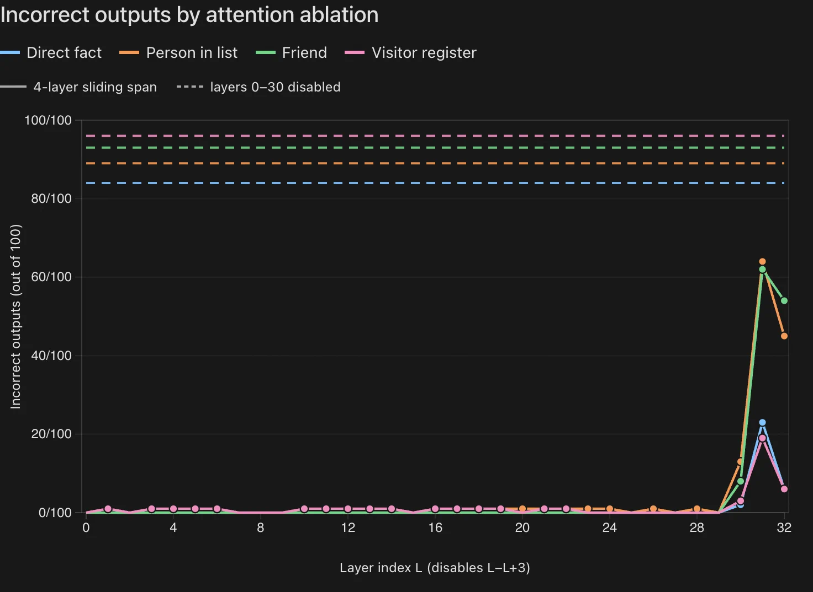
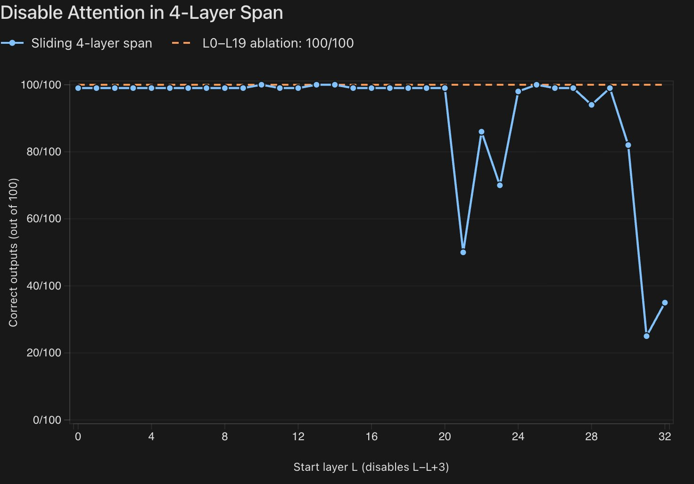
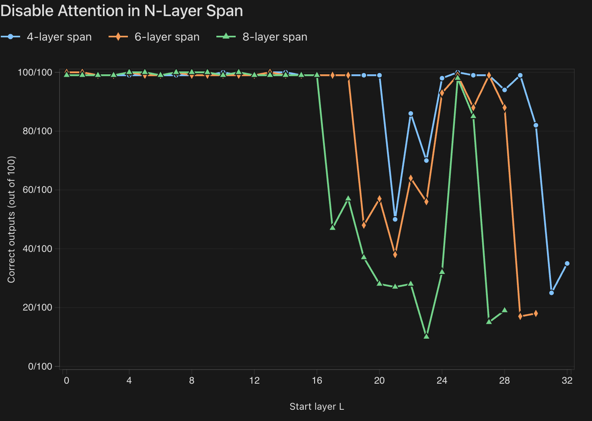
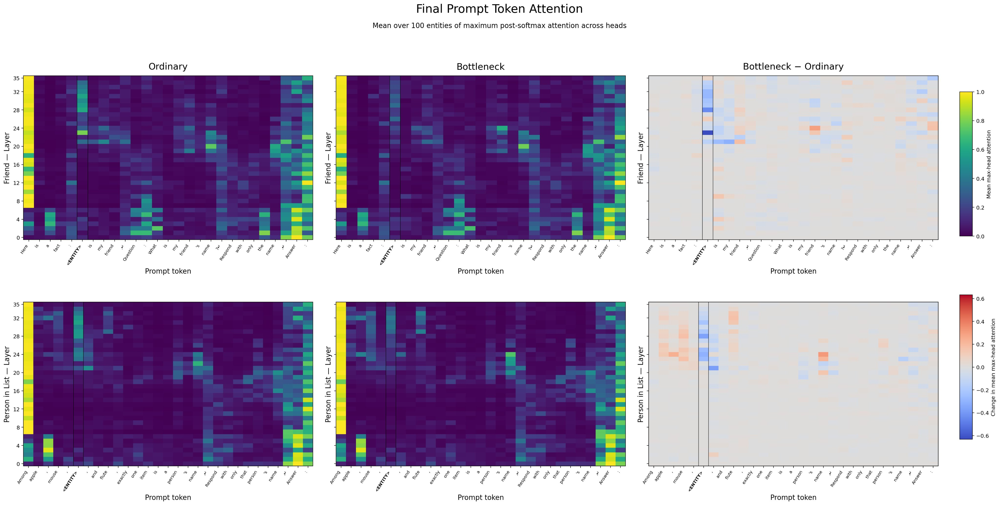
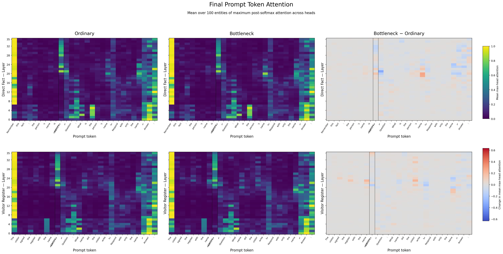

Disabling Attention Layers
This blog documents chronologically experiments I run to discover peculiar attention patterns in transformers.
August 25, 2026
I found that only a very small number of final attention layers are necessary (but not sufficient) for extracting entity information from context.
The setup. I ran four templates on 100 entity names each. For example, one of them is: "My friend is [Einstein]. You need to tell me the name of my friend. Answer with only the name: ". All four purport to contain an entity token like "Einstein". Intuitively, a good transformer base model can easily answer with the name in the output.
The intervention. I disable the attention to "Einstein" and for a consecutive 4 attention layers. This "sliding window" of disabled layers goes from L0-3, L1-4, ... all the way to L32-35, for Qwen3-8B.
The finding. I found that only when disabling L31-34 and L32-25, ie. the very final layers, do we see a surge in incorrect answers. For example, i see outputs like: "I do not know the name of this friend." This shows that only the final few attention layers are necessary for extracting the entity info.
There are also some fascinating corner cases: whereas the good baseline will answer "Musk" if the context says "my friend is Musk", the perturbation causes the model to say "Elon" instead. -- I take this to hint that whereas the exact token is destroyed by disabling attention, the relevant entity info (the "Elon-Musk-ness") is leaked into other context tokens, so the model can recover the person, just not the right name.
However, the final attention layers are not sufficient. I then disabled L0-30 attention completely, to see if the model can still extract Einstein info and the like from L31-35. -- They can't most of the time. But even surprisingly some sequences still recover the right info, after losing 5/6 of all attention layers! This is pretty amazing and funny to me. So I have designed quite a few follow-ups to have more fun.

August 28, 2026
It's interesting that on a very simple prompt template, by removing all tokens' attention except the last prompt token's to an entity token (eg. "Einstein"), the first 2/3 attention layers are neither necessary nor sufficient for extracting that info for next token prediction.
The setup. I've done this experiment previously, but in a slightly unprincipled way. I want to measure in a prompt template "Remember the name [name (eg. "Einstein")]. Question: what is the name? Answer:", which attention layers in the final token ":" is responsible for extracting Einstein info. But I didn't prevent data leakage because all other prompt tokens, as well as following generation tokens, can attend to "Einstein". So now I have removed all their attention to "Einstein" so the final token is the single source for extracting Einstein info.
The result. 1. I find that removing L0-19 of a 32-layer Qwen3-8B has no effects on 100 entity examples. 2. I find that removing the later layers has a very specific pattern: L20-24 seems to block the information quite a bit, but then the model recovers, and then in L31-35 the model collapses. I validated this on various block sizes of consecutive layers, and found that they produce correlated patterns. So there are some subset of deep layers that are necessary and sufficient for extracting entity info in earlier context.
The strange finding. Some of the degenerate outputs after blocking L31-35 have a very peculiar behavior: for example, the model mistakes Tolkien for JK Rowling and Gandhi for Greta Thunberg. This seems to suggest that the model prioritizes abstract feature of the entity (occupation, domain, etc.) rather than the "name" of the entity. -- This is a very Feynman idea as he says that the least important feature of a concept is its name :).
Next up I will systematically ablate this feature extraction idea. And I will ablate on more templates.


September 4, 2026
Found an interesting phenomenon of attention: to properly attend to a target token in a forward pass, LLMs need the other tokens to also attend to that same token. Otherwise, it might decide to not attend to it enough.
The motivation. I was studying which sets of layers are necessarily / sufficient for extracting information from a target token. In one of my 100 examples, it involves a question including the entity token [Einstein] and demands the model to predict, for the next token, [Einstein] again. To ensure the model is not cheating by attending to other tokens which has computed attention from [Einstein], all intermediate tokens other than the final prompt token have their attention to [Einstein] removed.
The surprisingly finding, independent of the main results, is that depending on the template of the question, having full attention from the last token to the entity token at every layer may or may not recover entity information. Specifically, if we ask "Remember this name: [Einstein]. What is the name? Answer:", the model can often recover [Einstein] and other entity tokens precisely, but if we ask "I have a friend called [Einstein]. Who is the friend? Answer:", the model fails in a large number of cases.
The interpretability experiments. To see what happens to the erring template before vs after attention from intermediate tokens is removed, I plot the last token's per-layer max attention across heads over the prompt prefix, including the [entity] token. Among two erring templates and two functioning templates, the biggest difference is that, after attention from intermediate tokens is removed, the last token's attention to [entity] is significantly reduced. There are no other attention anomalies that cannot be explained by the decrease of this attention slot alone.
The ablation. My hypothesis is that sufficient attention to [entity] is enough to recover the entity info for next token prediction. The alternative is that sufficient attention to [entity] from intermediate tokens themselves is required, and that even with enough attention to [entity] from the last token, the outputs will still be wrong. To prove the hypothesis, I simply recover the last token's attention scores to [entity] before intermediate tokens' attention to [entity] is disabled, without touching the last token's attention scores to the intermediate tokens. As a result, the attention scores will sum to 1, and only differ in having greater attention to [entity] from the last token.
I find that the performance of the model to extract entity info is fully recovered, after patching just the attention scores. This is then clear evidence that the errors stem entirely from insufficient attention to [entity]. Since the only causal factor for the attention decline is that intermediate tokens no longer attend to [entity] themselves, the finding is: their attention to [entity] is causally impactful for the last token to attend to [entity] properly.


Citation
@misc{he2026disablingattentionlayers,
author = {He, Muyu},
title = {Disabling Attention Layers},
year = {2026},
url = {https://riddlehe.github.io/blog/disabling-attention-layers.html}
}